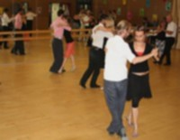

Bienvenue sur ABRAZO PA' BAILAR
ABRAZO PA' BAILAR est une association qui propose des Cours hebdomadaires et des Stages de Tango Argentin à Locmaria-Plouzané , Plougonvelin et Le Conquet en pays d'Iroise.
Envoyer un mail à 29abrazopabailar@gmail.com, si vous êtes intéréssé(e)s
LE TANGO ARGENTIN :
Le Tango Argentin (de bal) est une danse d'improvisation. Le couple vit des pauses et des déplacements selon le ressenti que lui inspire les accents musicaux de cette musique très variée. Ceci necessite l'écoute réciproque des partenaires et développe la réceptivité et la sensibilité. Il n' y a pas de chorégraphies à apprendre, contrairement au Tango argentin de scène (pour les spectacles d'artistes professionnels). Le repertoire du tango Argentin comprend différents rythmes ou sonorités: tango classique, milonga, valse argentine, tango nuevo, moderne électro. Cette technique permet de danser sur des tangos mais aussi sur beaucoup d'autres musiques classiques ou actuelles.
Ces danse et musique sont nées à la fin du 19ième siècle de la rencontre d'immigrés européens, d'esclaves noirs et de métis hispano-amérindiens, dans les quartiers pauvres en Argentine et en Uruguay. Le tango argentin connait depuis quelques années un essor mondial, et a été inscrit par l'UNESCO au Patrimoine mondial immatériel de l'Humanité le 30 septembre 2009.